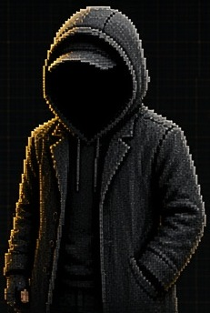

⣿ hooded builder @ nullai · zero telemetry · vanilla js
1nc0gn30
i build free tools. no accounts, no telemetry. tips optional.

character board & braille / bayer dither lab
9-pose pixel turnaround & action rig compiled in real time into Unicode U+2800 2×4 sub-pixel Braille & Ordered Bayer 4×4 ASCII.
what i build
-
zoth studio
v2.2.072 tools
53 run in the browser, 19 on the cli. zero paywalls, zero signups, free forever.
zoth.nullai.tech → -
zothos
v3.4.043 workstations
23 loopback daemons + 141 mcp tools across 11 servers. local first, nothing leaves the box.
zothos.nullai.tech → -
hermes-zoth
v1.1.4community plugin
zoth tools inside hermes agent. independent, not affiliated with nous research.
github → -
nullai
umbrellathe foundry
where zoth studio, zothos, zothos-lite, and open research ship. everything free.
nullai.tech →
field dispatches & specimen sheets


links & optional tip jar
- x.com/1nc0gn30
- github.com/1nc0gn30
- github.com/NullAITech
- nullai.tech
- zoth.nullai.tech
- zothos.nullai.tech
- zothos-lite.nullai.tech
- braille-character-board.txt ↓
☕ buy us a coffee · tips 100% optional
every tool across nullai, zoth studio, and zothos is 100% free and unlocked by default. if a tool saved you an hour, you can toss a coffee or sol tip below.
what does 1nc0gn30 build at nullai?
100% free, local-first developer & sovereign AI systems: Zoth Studio (72 tools: 53 in-browser + 19 CLI binaries), ZothOS (43 workstations & 23 loopback daemons), ZothOS-Lite, and hermes-zoth v1.1.4.
how does the braille lattice & bayer dither engine work?
zero external libraries. the 3d perspective cube and 9-pose character board are sampled on an offscreen canvas, quantized with a 4×4 ordered bayer matrix, and packed into Unicode U+2800 2×4 sub-pixel braille cells at 30fps.
are there any accounts, paywalls, or telemetry?
never. no analytics scripts, no web font trackers, no login modals, and zero paywalls. everything runs in your browser or on your local machine.
psst: press ` (backtick) or click >_ for an interactive shell (try help, braille hero, ascii type, zoth).